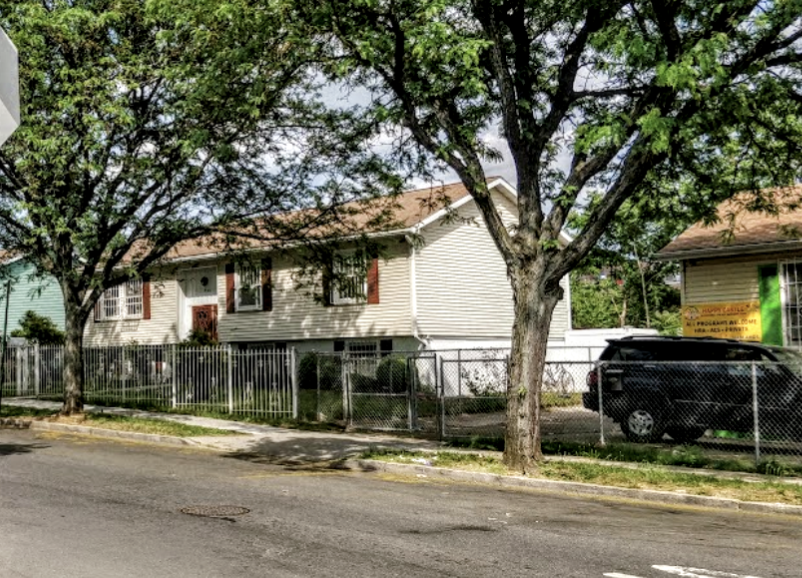

A different pace
Charlotte Gardens
A housing development in the South Bronx, known for its suburban-style homes.
Background
Charlotte Gardens was developed in the 1980s as part of efforts to revitalize the South Bronx. The project involved building single-family homes on vacant lots, offering an alternative to the high-rise public housing typical of the area. It is a notable example of urban renewal through suburban-style development.
Original AI-assisted background; not independently verified.
From the original map
Zoned differently from the rest of the area for interesting historical reasons
Check current access before visiting. A place on this map is not necessarily open to the public.
Nearby places
Straight-line distances, not walking routes.
Discussion & corrections

Photo credits
David Herszenson40.83427, -73.89221 · Explore the surrounding area ↗